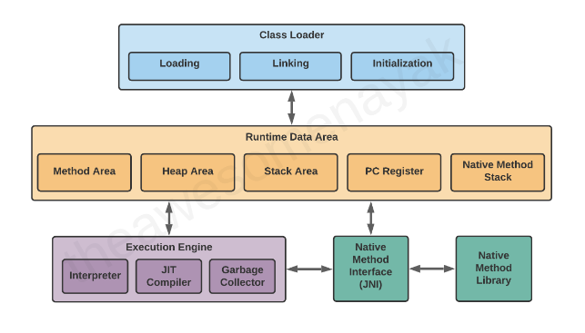
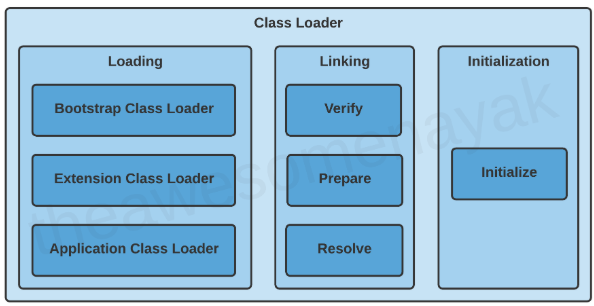
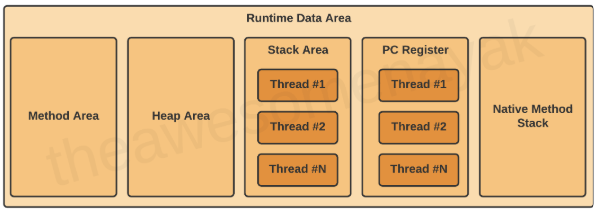

Java Virtual Machine (JVM)
Introduction
- JVM is the core of the Java ecosystem, and makes it possible for Java-based software programs to follow the "write once, run anywhere" approach.
- JVM was initially designed to support only Java. However, over the time, many other languages such as Scala, Kotlin and Groovy were adopted on the Java platform. All of these languages are collectively known as JVM languages.
- A virtual machine is a virtual representation of a physical computer.
- We can call the virtual machine the guest machine, and the physical computer it runs on is the host machine.
- In programming languages like C and C++, the code is first compiled into platform-specific machine code. These languages are called compiled languages.
- On the other hand, in languages like Python, the computer executes the instructions directly without having to compile them. These languages are called interpreted languages.
- Java uses a combination of both techniques. Java code is first compiled into byte code to generate a class file. This class file is then interpreted by the Java Virtual Machine for the underlying platform.
- The same class file can be executed on any version of JVM running on any platform and operating system.
- Similar to virtual machines, the JVM creates an isolated space on a host machine. This space can be used to execute Java programs irrespective of the platform or operating system of the machine.
Bytecode
- Java Bytecode is the intermediate representation of your Java code that is executed by the Java Virtual Machine (JVM).
- When we compile a Java program, the Java compiler (
javac) converts the code into bytecode, which is a set of instructions that the JVM can understand and execute. - This bytecode is platform-independent, meaning the same Java program can run on different devices and operating systems, a principle known as "write once, run anywhere".
- It acts as a bridge between your high-level Java code and the lower-level operations that occur within the Java Virtual Machine (JVM).
- This bytecode is a set of instructions that are not human-readable like Java code but are far less complex than machine code.
- Each instruction in Java bytecode is one byte in length, which is where the term “bytecode” comes from.
- However, some instructions are followed by additional bytes that provide operands for the instructions.
- The bytecode instructions are designed to be compact, and efficient, and operate on a stack-based architecture. This is in contrast to most physical CPU architectures, which are register-based.
JVM Architecture

JVM consists of three distinct components.
Class Loader
- When we compile a
.javasource file, it is converted into byte code as a.classfile. - When we try to use this class in our program, the class loader loads it into the main memory.
- The first class to be loaded into memory is usually the class that contains the
main()method. - There are three phases in the class loading process:

- Loading
- Involves taking the binary representation (bytecode) of a class or interface with a particular name, and generating the original class or interface from that.
- If a parent class loader is unable to find a class, it delegates the work to a child class loader.
- If the last child class loader isn't able to load the class either, it throws
NoClassDefFoundErrororClassNotFoundException.
- Linking
- Linking a class or interface involves combining the different elements and dependencies of the program together.
- Verification: This phase checks the structural correctness of the .class file by checking it against a set of constraints or rules. If verification fails for some reason, we get a
VerifyException. - Preparation: In this phase, the JVM allocates memory for the static fields of a class or interface, and initializes them with default values.
- Resolution: In this phase, symbolic references are replaced with direct references present in the runtime constant pool.
- Initialization
- Involves executing the initialization method of the class or interface (known as
<clinit>). - This can include calling the class's constructor, executing the static block, and assigning values to all the static variables.
- The JVM is multi-threaded. It can happen that multiple threads are trying to initialize the same class at the same time. This can lead to concurrency issues.
- Involves executing the initialization method of the class or interface (known as
Runtime Memory/Data Area

- Method Area
- All the class level data such as the run-time constant pool, field, and method data, and the code for methods and constructors, are stored here.
- If the memory available in the method area is not sufficient for the program startup, the JVM throws an
OutOfMemoryError.
- Heap Area
- All the objects and their corresponding instance variables are stored here.
- This is the run-time data area from which memory for all class instances and arrays is allocated.
- The heap is created on the virtual machine start-up, and there is only one heap area per JVM.
- Since the Method and Heap areas share the same memory for multiple threads, the data stored here is not thread safe.
- Stack Area
- Whenever a new thread is created in the JVM, a separate runtime stack is also created at the same time.
- All local variables, method calls, and partial results are stored in the stack area.
- If the processing being done in a thread requires a larger stack size than what's available, the JVM throws a
StackOverflowError. - For every method call, one entry is made in the stack memory which is called the Stack Frame.
- When the method call is complete, the Stack Frame is destroyed.
- The Stack Frame is divided into three sub-parts: Local Variables, Operand Stack, Frame Data.
- Since the Stack Area is not shared, it is inherently thread safe.
- Program Counter (PC) Registers
- The JVM supports multiple threads at the same time.
- Each thread has its own PC Register to hold the address of the currently executing JVM instruction.
- Once the instruction is executed, the PC register is updated with the next instruction.
- Native Method Stacks
- The JVM contains stacks that support native methods.
- These methods are written in a language other than the Java, such as C and C++.
- For every new thread, a separate native method stack is also allocated.
Execution Engine
- Once the bytecode has been loaded into the main memory, and details are available in the runtime data area, the next step is to run the program.
- The Execution Engine handles this by executing the code present in each class.
- However, before executing the program, the bytecode needs to be converted into machine language instructions.
- The JVM can use an interpreter or a JIT compiler for the execution engine.
Java Native Interface (JNI)
- At times, it is necessary to use native (non-Java) code (for example, C/C++).
- This can be in cases where we need to interact with hardware, or to overcome the memory management and performance constraints in Java.
- Java supports the execution of native code via the Java Native Interface (JNI).
- JNI acts as a bridge for permitting the supporting packages for other programming languages such as C, C++, and so on.
- This is especially helpful in cases where we need to write code that is not entirely supported by Java, like some platform specific features that can only be written in C.
- Native Method Libraries
- Libraries that are written in other programming languages, such as C, C++, and assembly.
- These libraries are usually present in the form of
.dllor.sofiles. - These native libraries can be loaded through JNI.
Just-In-Time (JIT) Compiler
- The interpreter reads and executes the bytecode instructions line by line. Due to the line by line execution, the interpreter is comparatively slower.
- Another disadvantage of the interpreter is that when a method is called multiple times, every time a new interpretation is required.
- The JIT Compiler overcomes the disadvantage of the interpreter.
- The Execution Engine first uses the interpreter to execute the byte code, but when it finds some repeated code, it uses the JIT compiler.
- The JIT compiler then compiles the entire bytecode and changes it to native machine code.
- This native machine code is used directly for repeated method calls, which improves the performance of the system.
- The JIT Compiler has the following components:
- Intermediate Code Generator - generates intermediate code.
- Code Optimizer - optimizes the intermediate code for better performance.
- Target Code Generator - converts intermediate code to native machine code.
- Profiler - finds the hotspots (code that is executed repeatedly).
- A JIT compiler takes more time to compile the code than for the interpreter to interpret the code line by line.
Resources
- https://www.freecodecamp.org/news/jvm-tutorial-java-virtual-machine-architecture-explained-for-beginners/
- https://medium.com/@AlexanderObregon/an-introduction-to-java-bytecode-885677548674